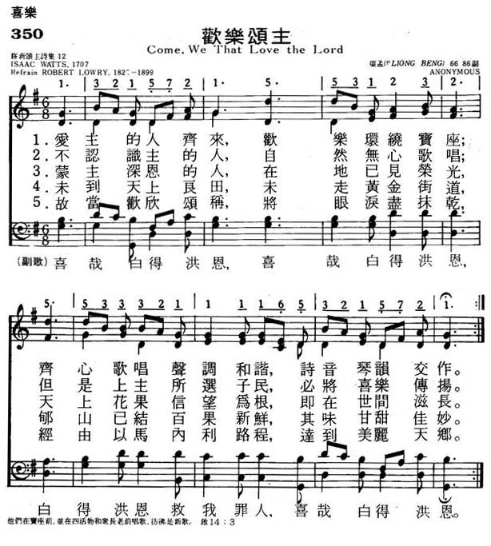

0483 Marching to Zion (Come We That Love the Lord) _Isaac
Watts 喜乐歌 ▲
| 簡介
Come, we that love the Lord |
|
It has undergone many alterations and revisions. The hymn, as a
whole, is regarded as a good specimen of Watts's powers.
See Nehemiah 12 for the account of such a call to celebrate when the
newly-built walls of Jerusalem were dedicated. Hear a similar call to
celebrate in Psalms 95, 96, and 98. And hear how John’s visions also
includes such a call to celebrate in Revelation 5:6-14 and 7:9-17.
|
|
|
喜乐歌歌词 |
|
1 Come, we that love the Lord,
and let our joys be known.
Join in a song with sweet accord,
join in a song with sweet accord,
and thus surround the throne,
and thus surround the throne.
Refrain:
We’re marching to Zion,
beautiful, beautiful Zion.
We’re marching upward to Zion,
the beautiful city of God.
2 The hill of Zion yields
a thousand sacred sweets,
before we reach the heav’nly fields,
before we reach the heav’nly fields,
or walk the golden streets,
or walk the golden streets. [Refrain]
3 Then let our songs abound,
and ev’ry tear be dry.
We’re marching thro’ Immanuel’s ground,
we’re marching thro’ Immanuel’s ground,
to fairer worlds on high,
to fairer worlds on high. [Refrain]
|
1
爱主的人齐来
放开喜乐心怀
奏乐唱歌 环绕宝座
众音甜蜜和谐
2
未曾识主的人
自然无心歌唱
但是上主所选子民
必将喜乐传扬
3
蒙主深恩的人
在地已见荣光
天上花果信望为根
即在世间滋长
4
未到天上良田
未走黄金街道
郇山已结许多果实
其味芳香佳妙
5
同来欢欣歌唱
消除所有悲伤
经由以马内利程途
达到美丽地方
阿们 |
|


https://hymnary.org/hymn/LUYH2013/page/527
|
| |
|

http://www.xueshengshi.com/?p=6658
简介（一） （来源：《赞美诗新编史话》）
经文：“我又看见且听见宝座与活物并长老的周围有许多天使的声音，他们的数目有千千万万” (启5：11)。
这首《喜乐歌》是瓦茨 (事略参阅第 12、22首)为改善当时死气沉沉的礼拜气氛而作的。
原诗共十节。最初发表在瓦茨的《赞美诗与灵歌》(1707年)中。今各赞美诗都只选择其中五节。原诗的题目是《在地上的属天的快乐》。这是一首奋兴式的赞美诗，有人称它为“快乐信徒活泼生活的里程”。传说从前有一个教堂的唱诗班，不愿高唱圣诗、圣歌而愿意唱些其它歌曲，教堂中的牧师曾用这首赞美诗的第二节来劝勉他们：
未曾识主的人，自然无心歌唱；
但是上主所选子民，必将喜乐传扬。
曲作者斯皮斯 (J．M.Spiess ，1715— 1792)是德国巴伐利亚人，在德国海德尔堡的教堂任管风琴师，
1766年又在波恩任教堂管风琴师。1745年曾出版过一本根据诗篇所编的《众赞歌集》。
https://blog.xuite.net/w3817939/hymn/64522504
作者：以撒華滋
136
讚美主－祂的恩典
6686副
G大調6/8
1
愛主的人都來，
將你喜樂敞開，
甘甜唱著主的奇愛，
同到寶座前來。
（副）
樂哉，白白恩典！
樂哉，白白恩典！
白白恩典，完全赦免，
樂哉，白白恩典！
2
未識主名的人，
讓他緘默無聲；
主的子民既蒙深恩，
應當喜樂歡騰。
3
未入榮耀之城，
未履精金之街，
郇山佳果甜美豐盈，
豫嘗何等喜悅。
4
故當高聲歌唱，
忘記所有憂傷；
我們昂首向前直往，
屬天、更美家鄉。
以撒華滋是被歷代教會推崇爲“聖詩之父”的一位傑出弟兄。因爲是從他起頭開創了一個風氣，使多少神所使用的人，藉著現代的語文，將所得的啓示、經歷、靈感，寫成許多寶貴的詩歌，使後世的教會受益無窮；幷且在當時神也確實藉著所賜給他寫詩的恩賜，將那一個時代的教會，帶進一個屬靈的復興。
那個時代，英國的教會經過了十七、十八兩個世紀，清教徒復興之後，已經逐漸趨于冷淡，到了以撒華滋的時候，教會已經落到十分荒凉的地步，神的兒女對屬靈的事完全失去了興趣，很難發現有屬靈的生活。甚至到了一個地步，在各處聚會中，常會發現牧師在講臺上講些無所謂的道，而聖徒們則坐在下面彼此閑談，有人在聚會中隨便吃喝，有人就索性在聚會中休息睡覺。教會的情形已經到了不能繼續生存的地步。
正像神在歷代所作的事一樣，當教會墮落到極其荒凉的時候，神的手就進來干涉。神必須找到一個器皿，來挽回屬靈荒凉的局面，復興祂的教會。那時所使用的器皿，就是以撒華滋。神使用他的方式，是非常獨特的；神幷不是藉著他所釋放的信息或他的工作來復興教會，乃是藉著神所賜給他寫詩的恩賜，帶給教會一個大復興，使籠罩英國教會所有的暮氣，一掃而空。他的詩歌在那個時代的英國教會中，所發生的影響、能力和價值，只有到永世�塈畯怳~能清楚計算。
以撒華滋在1674年，生于英國南安普頓一個非常愛主而且虔誠的家庭�堙C他的父親是一個源于清教徒獨立教會的一個執事。當時英國的國教，逼迫清教徒甚爲殘忍，許多神的僕人，都被判罪。以撒華滋的父親爲著對主忠誠，忍受了許多人所不能忍受的逼迫。當以撒華滋出生時，他的父親正在獄中，而他的母親是歐洲大陸人，也是清教徒的後裔，就是因爲主的緣故受到逼迫，才逃到英國；她是一個十分愛主的姊妹，對于主一直有一個殉道的靈。她常常抱著小以撒，到監獄中去看他的父親。在以撒華滋九歲的時候，他的父親又因著主的緣故無法在當地立足，被逼離開家庭，獨自到外面去飄泊。所以在以撒華滋年幼的時候，他父母在他屬靈生命�堜珘堣U的影響，既深且遠。他七歲的時候，得救歸于主的名下，聖靈把神的愛澆灌在這孩子的心中，幷且使這愛在他心中越來越發旺。他從小天資聰穎，故此在他年少時有許多有名望的人，願意介紹他進入牛津大學深造，以後可以作牧師。在當時英國國教中牧師的職位，是深爲一般人所羡慕的。但是以撒華滋爲了主的緣故堅决拒絕，只願清心、單純地跟隨歷代先知使徒的脚踪，在拿撒勒人耶穌走過的路上，堅定地跟隨主。
神訓練一個器皿所用的方法，永遠是我們天然的思想所不能明白的。以撒華滋從小體弱多病，到他成人的時候，體格十分矮小，而且氣貌不揚。神却賜給他先知講道的恩賜，他每次站在講臺上釋放信息時，他的話語不僅帶著新鮮的啓示，而且滿有能力，使聽的人心靈震動。但是神對他有更美好的計劃，神幷沒有在先知講道上重用他，他一生中儘是坎坷、艱難，他終身未娶妻，過著孤單的生活；幷且一直爲疾病所纏。在1713年，因他舊病復發，他的朋友接他到鄉下一個別墅�堨h養病，哪里知道，這一去就住了36年。在這36年孤單、關閉的日子中，他除了偶爾爲主釋放信息之外，其他時間都專一用在寫詩的工作上，一直到75歲，安然被主接去。
他所寫的詩歌非常多，但因他是一個特別認識十字架救贖大愛的人，主不僅將羔羊釘十字架的大愛啓示在他心�堙A也將這愛澆灌在他心中，所以在他所寫的許多詩歌中，最能摸著人心，流露生命的詩歌，都是關于主耶穌釘十字架的。直到今天，詩人所寫的詩歌中，關于主釘十字架、救贖大愛一類的詩歌，沒有一個能趕上以撒華滋的。
http://www.congsing.org/come_we_that_love.html
Heavenly Joy on Earth
Isaac Watts, 1707
Addressed to one another
|
Come, we that love the Lord, |
Ps. 40:16 |
|
and let our joys be known; |
Neh. 12:43; Ps. 4:7; Rom. 14:17 |
|
join in a song with sweet accord, |
Is. 52:9; Ps. 133:1–2 |
|
and thus surround the throne. |
Rev. 14:3 |
|
|
|
|
Let those refuse to sing |
Is. 38:18 |
|
that never knew our God; |
Ex. 5:2 |
|
but children of the heav’nly King |
Rom. 8:15; Mark 10:14 |
|
may speak their joys abroad. |
Matt. 28:19 |
|
|
|
|
The men of grace have found |
|
|
glory begun below; |
Ps. 19:1; 2 Cor. 3:18 |
|
celestial fruits on earthly ground |
Gal. 5:22–23; Eccl. 3:10–13 |
|
from faith and hope may grow. |
Rom. 5:1–2 |
|
|
|
|
The hill of Zion yields |
Ps. 48:2; Mark 10:30; Luke 18:29–30 |
|
a thousand sacred sweets, |
Ps. 16:11 |
|
before we reach the heav’nly fields |
|
|
or walk the golden streets. |
Rev. 21:21 |
|
|
|
|
Then let our songs abound, |
Ps. 98:4; Eph. 5:19 |
|
and ev’ry tear be dry; |
Ps. 116:8; Is. 35:10 |
|
we’re marching through Immanuel’s ground |
Col. 2:15 |
|
to fairer worlds on high. |
1 Cor. 13:12 |
Two lines from Watts’ original second stanza (omitted on poetic grounds
from most modern hymnals) sum up the thesis of this hymn nicely: “Religion
never was designed / to make our pleasures less.” This thesis is opposed
by the escapist theology which has at times dominated evangelicalism and
which created the popular revivalist chorus often forced to append this
hymn. But though the last stanza may allude to “fairer worlds on high,”
the hymn is clearly dedicated to “glory begun below” (stanza 3, line 2).
If joyless orthodoxy or loathing of this life are diseases found sometimes
among evangelicals, this hymn points to their cure.
The first two stanzas make distinction between God’s people and those
“that never knew our God.” The first group, and your congregation among
them, are to sing for joy. The first stanza has the congregant ascend to
the heavenly hosts by means of his song—notice the “thus” of the stanza’s
last line—and this is not the only taste of heaven we get in the hymn. But
the next stanza has the second group (the children of the world) refuse to
sing. Whether or not they have something to sing about is not our business
here. Their defiance is to be expected; Christians who similarly refuse
have to ask themselves why.
The first two stanzas are a preface, but the third and fourth get to the
heart of Watts’s argument. Other stanzas, now omitted, define concretely
some of the “celestial fruits” about which Watts writes, but even without
them we have a good sense of his meaning because they grow “from faith and
hope.” By faith, we know that whatever we endure in this life is for our
good. We may hope that God is remaking us in his image, even though that
transformation is less clear now than it will be. And in the meanwhile, we
have the consolation of His word and His glory in general revelation.
These goods are not worldly goods. They are celestial. We enjoy them here
because God grows them up even in our worldly habitation as earnest for
his people. The fourth stanza casts the image of the holy city set upon a
hill, around which nevertheless we find some of the same “sweets” that
grow up at the hilltop. But perhaps most important of all is the last
stanza. Key to understanding the hymn is the “through” of its third line.
We are not marching through enemy territory with hope that we will someday
find our captain. We are already on Immanuel’s
ground, with fairer land therein yet to come. It is true that “we’re
marching to Zion, beautiful, beautiful Zion” but on our way we are treated
to “celestial fruit” and “sacred sweets.” What else would we expect to
find growing in “Immanuel’s ground”?
Short meter (two lines of six, one of eight, and one of six) is born out
of poulter’s meter—a meter C. S. Lewis called “terrible.” But the child
here is better than the parent and Watts uses it well. A quick scan of the
stanzas above will find relentless iambs, almost metronomic in their
precision, with two meaningful exceptions. The third line of the first
stanza begins with a trochee (the first foot of the line inverts the
prevailing unstressed–stressed pattern). The musical reader will apprehend
why. The rhythm turns, for a moment, into a dance in three as we “join in
a song.” We march along with iambs for two lines and on the third
release to a waltz. The only other interruption to the iambs, found in
stanza 3, line 2, makes the word “glory” pop out of the line like a
starburst.
ST. THOMAS is a useful short-meter tune, and especially when wed to
this text. The challenge to any tune in so common a meter is to be
distinctive. This one is so through its cadence structure
which is very unusual (indeed, among short-meter tunes in the Trinity
Hymnal it is unique). All cadences but the last one are half cadences
(that is, ones that pause on the dominant rather
than on the tonic).
This means that the tune’s tension is established, unlike most short-meter
tunes, in the very first clause and sustained through the second and third
only to be released at the very end of the tune. To get a sense for how
this works, the reader can sing through the hymn one line of text at a
time with long pauses between each line. It will be obvious how each of
the first three melodic units leaves us hanging. Functionally, this means
that the last line of each stanza is heavily emphasized by the tune. And
it is this last line in each stanza which needs emphasis in this poem for,
unlike many short-meter poems, Watts saves his climactic language for the
last short line instead of the eight-syllable penultimate one. The tune
makes the last lines, and by them the rest of each stanza, memorable to
the congregation so that they can take it with them to sing on their way
“to fairer worlds on high.”
https://hymnary.org/text/come_we_that_love_the_lord_and_let_our
Notes
Come, we [ye] that
[who] love the Lord. I. Watts. [Joy and Praise.] First
published in his Hymns & Sacred Songs, 1707, and again, 2nd ed.,
1709, Bk. ii., No. 30, in 10 stanzas of 4 lines, and entitled "Heavenly Joy
on Earth." In its original and full form it is rarely found in modern
collections, the New Congregational Hymn Book, 1859, No. 693, and
the Baptist Psalms & Hymns, 1858-80, being exceptions with the
alteration of stanza iii., line 3, of "fav'rites" to "children." It has
undergone many alterations and revisions. Of these the principal are:—

1. "Come ye that love the Lord." This was given by J. Wesley in his Psalms
& Hymns, published at Charlestown, U. S., 1736-7, during his stay in
Georgia. In this form stanzas ii. and ix. are omitted, and the rest are
considerably altered. After slight revision this text was repeated by Wesley
in the Wesleyan Hymn Book, 1780, and is in the revised edition,
1875, and in most collections of the Methodist communion.
2. "Come ye who love the Lord." This reading of the first line was given by
Cotterill in the 8th ed. of his Selection, 1819, and is followed
in Hymnal Companion and others.
The different arrangement of stanzas, and the variations in the text which
have been adopted by the numerous editors who have used it in one form or
another may be counted by the hundred. The example set by Wesley in
1736, was followed by Whitefield, 1753; Madan, 1760; Conyers,
1772; Toplady, 1776, and onwards to the latest modern collection.
No text can, as a rule, be relied upon. The original is easy to obtain in
modern editions of Watts. The hymn, as a whole, is regarded as a
good specimen of Watts's powers.
--John Julian, Dictionary
of Hymnology (1907)
MARCHING TO ZION (Lowry)
Composer: Robert Lowry (1867)
Published in 223
hymnals

ST. THOMAS (Williams)
Composer: Aaron Williams (1763)
Published in 613
hymnals
Notes
ST. THOMAS is actually
lines 5 through 8 of the sixteen-line tune HOLBORN, composed by Aaron
Williams (b. London, England, 1731; d. London, 1776) and published in his Collection (1763,
1765) as a setting for Charles Wesley's text "Soldiers of Christ, Arise"
(570). The harmonization is by Lowell Mason (PHH
96). Well-suited to part singing, ST. THOMAS must remain stately, with
two broad beats per bar.
Williams was a singing
teacher, music engraver, and clerk at the Scottish Church, London Wall. He
published various church music collections, some intended for rural church
choirs. Representative of his compilations are The Universal Psalmodist (1763)
– published in the United States as The American Harmony (1769) – The
Royal Harmony (1766), The New Universal Psalmodist (1770),
and Psalmody in Miniature (1778). His Harmonia Coelestis (1775)
included anthems by noted composers.
--Psalter Hymnal
Handbook, 1988

SWABIA (Spiess)
Composer: Johann M. Spiess (1745)
Published in 110
hymnals

https://www.umcdiscipleship.org/resources/history-of-hymns-come-we-that-love-the-lord
BY C. MICHAEL HAWN
"Come, We That Love the Lord" by Isaac Watts;
The United Methodist Hymnal, Nos. 732 and 733
Isaac Watts
Come we that love the Lord,
and let our joys be known;
join in a song with sweet accord,
and thus surround the throne.
Scholars often ascribe the title “Father of English hymnody” to Isaac Watts
(1674-1738). Though this title is exceptional, it is not undeserved. Watts was
raised in the Independent Congregational Church, part of the dissenters
tolerated under the official Church of England (Anglican). From an early age, he
showed his dissatisfaction for the established common practice of metrical
psalms, the strict poetic versification of the psalms for congregational singing
in worship. He pioneered a newer approach by composing hymns that
“Christianized” the texts of the Psalter. Even though “Come, we that love the
Lord” is not based on a psalm, it still follows Watts’ practice of adapting
Scripture for use as devotional poetry.
Robert Lowry
The original hymn, “Come, we that love the Lord,” can be found in Watts’ Hymns
and Spiritual Songs, Book II (1707) in ten, four-line stanzas entitled “Heavenly
Joy on Earth.” Because he loved it so much, John Wesley later used it as a part
of his Psalms and Hymns, ‘Charlestown’ Collection (1737) – the first hymnal
published in America during the Wesleys’ trip to the colony – with a revised
structure of eight-line stanzas, omitting stanzas two and nine. Since then, many
alternations have been made according to current editorial needs, culminating
with most modern hymnals using a four-line, four-stanza version, as well as a
further altered setting by gospel song writer Robert Lowry (1826-1899) with an
added refrain. Interestingly, John Wesley, who edited hymns by many authors
including Charles, modified Watts' original "we" in the opening line to "ye" in
collections he produced including A Collection of Psalms and Hymns (1737) and
the monumental A Collection of Hymns for Use of the People Called Methodists
(1780). This resulted in the opening stanza reading:
Come, ye that love the Lord,
and let your joys be known;
join in a song with sweet accord
while ye surround the throne.
John's modifications, though not a felicitous as Watts' original, were picked up
by several hymnals in the nineteenth century, especially among Methodists.
The United Methodist Hymnal, along with several others, pairs this hymn with two
tunes. Welsh composer Aaron Williams (1731-1776) wrote the first tune, ST.
THOMAS, in 1763. It reflects a more stately expression of joy that was typical
of British hymn tunes of the time. The second tune, MARCHING TO ZION (1867),
inspires an energy that fits its American revival context perfectly. Robert
Lowry adapted this hymn text and composed an original tune for it. Lowry was a
Baptist preacher in the United States ministering and teaching during the
critical time of the Civil War, a time coinciding with the rise of revivalism.
He is widely recognized for his compositions, and was noted for adding refrains
to popular hymns.
The repetitive nature of the text in Lowry’s version reflects the energy of a
revival atmosphere, making the text more easily sung in cultural settings where
not all present were literate. The refrain of Lowry’s version changed the focus
from a reverent recognition of “Heavenly Joy on Earth,” to a proclamation to a
community setting out on a journey. The addition of Lowry’s refrain increased
the popularity of Watts’ text and enhanced the joyful message of the original
text:
We’re marching to Zion,
beautiful, beautiful Zion.
We’re marching upward to Zion,
the beautiful city of God.
According to the hymnologist Ann V. Smith, the Scriptural references for this
hymn come from Revelation 14:1-3, 21:21, and 7:17. These passages address the
joys of the saints, singing as they “surround the throne.” In stanzas eight and
nine of the original poem (omitted in most hymnals today), we hear Watts
describe the presence of joy that can be found not just in heaven, but also on
earth:
The men of grace have found
glory begun below;
celestial fruits on earthly ground
from faith and hope may grow.
The hill of Zion yields
a thousand sacred sweets
before we reach the heav’nly fields,
or walk the golden streets.
From these stanzas, we can see how Watts not only wanted the singer to
communicate the joy of what was to come through eternal life in heaven, but also
the blessings of God on earth. An allusion to John Bunyan’s popular devotional
classic The Pilgrims Progress (1678) is found in the final stanza calling
attention to the Christian journey toward Zion and a triumphant entry into
“Immanuel’s ground.”
The inclusion of both settings in The United Methodist Hymnal reflects the broad
range of piety found in Methodism in the United States, a piety that ranges from
the stately solemnity to the revival spirit. Lowry’s refrain actually adds a
Wesleyan tone to Watts’ text that may be sung in light of the doctrine of
sanctification – “marching” toward perfection that will ultimately culminate in
heaven (“Zion”).
The hymn found in our hymnals today proclaims a simple,
straightforward biblical truth. However, in its original form, “Come, we that
love the Lord” delves deeper into an understanding of what God has given us in
creation and how we are to rejoice in it. As a community of believers, this hymn
gives us the opportunity to express the beauty of the life we are living, as
well as looking forward to what is to come.
Guest writer Taylor Vancil is a Master of Sacred Music student at Perkins School
of Theology, Southern Methodist University. He studies hymnology with Dr. C.
Michael Hawn.
C. Michael Hawn is University Distinguished Professor of Church Music, Perkins
School of Theology, SMU.
https://www.hymnologyarchive.com/come-we-that-love-the-lord
with
MARCHING TO ZION
ST. THOMAS
I. Text: Sources
This hymn by Isaac Watts (1674–1748) was first published in his Hymns and
Spiritual Songs (1707 | Fig. 1), in ten stanzas of four lines, without music,
and headed “Heavenly joy on earth.” In the second edition (1709), he revised
stanzas eight and ten (Fig. 2).
View fullsize
ComeWethatLovetheLord-HSS-Watts1707-1stEd-128.jpg
View fullsize
ComeWethatLovetheLord-HSS-Watts1707-1stEd-129.jpg
View fullsize
ComeWethatLovetheLord-HSS-Watts1707-1stEd-130.jpg
Fig. 1. Isaac Watts, Hymns and Spiritual Songs (1707).
View fullsize
comewe1709-1.png
View fullsize
comewe1709-2.png
View fullsize
comewe1709-3.png
Fig. 2. Isaac Watts, Hymns and Spiritual Songs, 2nd edition (1709).
II. Text: Analysis
Although the title describes a hymn about earthly joys, only some of the stanzas
speak about earthly worship gatherings, while the remainder of the hymn looks
forward to celestial worship. Watts looked to the latter to inspire the former.
The first stanza is a call to worship, thus this hymn is often used in that
regard. The second stanza seems to respond to an ideology or complaint which
sees religion as a barrier to earthly pleasure. Stanza four reflects biblical
language of God’s power over creation, found in places like Psalm 104, Psalm
107, or Job 38, and it references storm and sea, like many other great hymns
such as “Eternal Father, strong to save,” or “We'll understand it better by and
by.” The rest of the hymn describes features of heaven, although stanzas seven
and eight describe how the promise of heaven should provide seeds of joy during
the present state. Zion is the name of the hill in Jerusalem on which the temple
stood, but it also refers to the heavenly Jerusalem (Heb. 12:22, Rev. 14:1). A
modern worshiper singing about a hill with “a thousand sacred sweets” might
conjure images of Willy Wonka’s Chocolate Factory, but Watts likely had other
treasures in mind. The final stanza calls on worshipers to put away sadness and
march in confidence toward greater things above.
As with all of Watts’ hymns, the brackets indicate which stanzas should be
omitted if the hymn is deemed to be too long to sing or print as a whole.
III. Text: Development
One notable variant of the text is from the editorial hand of John Wesley
(1703–1791), who altered the text for his Collection of Psalms and Hymns
(Charlestown, 1737), omitting stanzas two and nine, and changing the opening
stanza from first person plural (“we”) to second person plural (“ye”). This was
repeated with minor revisions in A Collection of Hymns for the Use of the People
Called Methodists (1780 | Fig. 3), and from there it was accepted into many
Methodist collections in preference over Watts’ original text.
View fullsize
1780-CollectionHymns-PeopleCalledMethodists-01 16.jpg
View fullsize
1780-CollectionHymns-PeopleCalledMethodists-01 17.jpg
Fig. 3. A Collection of Hymns for the Use of the People Called Methodists, ed.
John Wesley (1780).
Another long-standing variant, changing “favorites of the heavenly King” to
“children of the heavenly King,” seems to have started with Psalms and Hymns for
Public, Social, and Private Worship, Prepared for the Use of the Baptist
Denomination (London, 1857).
IV. Tunes
1. MARCHING TO ZION
The hymn initially appeared with a multitude of tunes, with little agreement
between collections and tune books. In the United States, the most popular
setting has been MARCHING TO ZION, written by Robert Lowry (1826–1899), first
published in The Victory (1869 | Fig. 4). It did not appear in his collection
Silver Spray (1868), as is often reported in other hymnological commentaries.
The original arrangement was written in four parts, with the melody in the
second part. Lowry created a chorus, drawing words from Watts’ final two
stanzas.

View fullsize
Fig. 4. The Victory, Chester Allen & William Sherwin, eds. (NY: Biglow &
Main, 1869), melody in the second part.
Fig. 4. The Victory, Chester Allen & William Sherwin, eds. (NY: Biglow & Main,
1869), melody in the second part.
2. ST. THOMAS
Another common tune setting is ST. THOMAS, by Aaron Williams (1731–1776). This
tune is an excerpt (phrases 5-8) of his longer tune, HOLBORN, from The Universal
Psalmodist (1763 | Fig. 5). This setting was in four parts, melody in the third
part, and it was paired with Charles Wesley’s “Soldiers of Christ, arise.”

View fullsize
Holborn-UniversalPsalmodist-2ed-1764_sm.jpg
View fullsize
Fig. 5. Aaron Williams, The Universal Psalmodist, 2nd ed., corrected (1764).
Fig. 5. Aaron Williams, The Universal Psalmodist, 2nd ed., corrected (1764).
In 1770, Williams shortened the tune and renamed it ST. THOMAS’S for his New
Universal Psalmodist (1770 | Fig. 6), where it was set to Isaac Watts’
paraphrase of Psalm 48, “Great is the Lord our God.” Williams might have either
given this shortened tune idea to or taken it from Thomas Knibb’s The Psalm
Singers Help (ca. 1769). Knibb had paired it with another Watts paraphrase,
“Behold the lofty sky,” from Psalm 19.

View fullsize
Fig. 6. Aaron Williams, New Universal Psalmodist , 6th ed. (ca. 1775).
Fig. 6. Aaron Williams, New Universal Psalmodist, 6th ed. (ca. 1775).
ST. THOMAS has proven to be more enduring and more useful than HOLBORN. It is
known to many worshipers via the hymn “I love thy kingdom, Lord” by Timothy
Dwight (1752–1817), and it can be found set to many other texts. The connection
between this tune and “Come, we that love the Lord” seems to have started with
John Cole’s The Beauties of Psalmody, 2nd ed. (1805), a connection which has now
lasted over 200 years.
by CHRIS FENNER
for Hymnology Archive
17 July 2018
Related Resources:
Donald C. Brown, “Come, we that love the Lord,” Handbook to the Baptist Hymnal
(Nashville: Convention Press, 1992), p. 112.
Carlton R. Young, “Come, we that love the Lord,” Companion to the United
Methodist Hymnal (Nashville: Abingdon, 1993), pp. 302–303.
Nicholas Temperley, “ST. THOMAS,” The Hymnal 1982 Companion, vol. 3B (NY: Church
Hymnal Corp., 1994), no. 411.
Hymn Tune Index:
http://hymntune.library.uiuc.edu/default.asp
“Come, we that love the Lord,” Hymnary.org:
https://hymnary.org/text/come_we_that_love_the_lord_and_let_our
ST. THOMAS, Hymnary.org:
https://hymnary.org/tune/st_thomas_williams